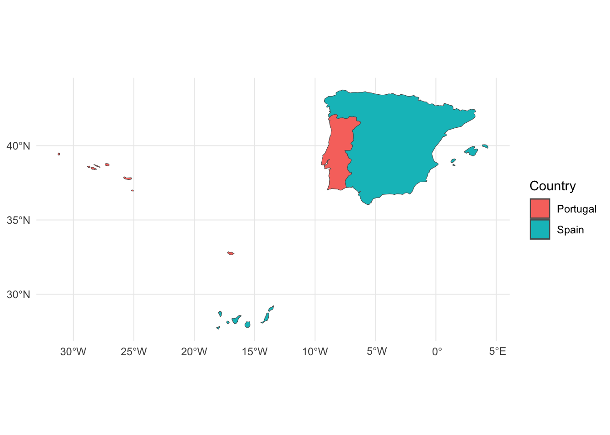

Chapter 8 Maps and geographic data
[This chapter has been written out of sequence so might refer to patterns that have not yet been covered in earlier chapters.]
You don’t get far in visualising patterns of air traffic without a map, whether that’s a map of airports, of routes between airports, or of regions: countries or, more air-traffic-focused, blocks of airspace. In this chapter we’ll build a set of tools for such things.
| In this chapter, you’ll be introduced to: |
|---|
spatial features, s2, rnaturalearthdata, R&D Data Archive, geom_sf, %<>%, st_transform, CRS and more. |
You might need to install the package hexbin, which is used by ggplot2 for some of the tasks in this chapter.
8.1 Spatial features
We choose to use ‘spatial features’ package sf as the main source of geographic functions since, of the several options, it feels most like an extension to the tidyverse. sf gives us, amongst other things:
sfc: geographic columns for data tables and tibbles, to hold points, lines and polygons;sf: spatial features objects, which are data tables and tibbles that have a designated default ‘geometry’sfccolumn;- functions which access libraries of geographic operations, such as for distances, intersections or unions;
- use of
geom_sf()in aggplotto plot one of these columns.
We’ll shortly see an example, but a ‘typical’ sf-enriched dataframe might be have one row per flight and an sfc column which contains the route flown by the flight, as a sequence of longitude-latitude points, but all folded up into a single cell per flight. If that sounds complicated, sf makes it pretty easy to use such data, and the gain of being able to ‘see’ the whole flight as one row in the data explorer is great.
There is lots of good documentation for ‘spatial features’ and plenty of good questions on StackExchange to help you with problems. There’s even a ‘cheatsheet’. Here we focus on using sf with aviation data.
The use of supporting libraries by sf can create complexity, for example requiring installation of extra code, such as GDAL (you’ll see GDAL and other libraries mentioned when you attach sf in the next code chunk). We’ll mostly stick to asking sf to use the s2 library, for a number of reasons:
- the code is available directly as the
s2package, so installation problems should be few; - we can quickly translate between
s2andsf; - and
s2works directly on the sphere.
library(sf)## Linking to GEOS 3.11.1, GDAL 3.5.3, PROJ 9.1.1; sf_use_s2() is TRUEsf::sf_use_s2(TRUE)
library(s2) # here we use a number of functions directly from s2
library(rnaturalearthdata) # for country mapsAs usual, if these library calls cause errors, then use install.packages(c("sf", "rnaturalearthdata")) to get the packages.
What does that mean ‘works directly on the sphere’? The main difference between geographic data and the sorts of data that we’ve been plotting so far is that the two dimensions, longitude and latitude, are not points on a plane, but on a sphere. One approach to working with such data is to project (i.e. ‘convert’) all your data onto the plane by transforming with a ‘coordinate reference system’ (CRS), and then work on the plane, allowing for some of the distortion that is inevitable, eg straight lines might no longer be straight.
With s2 we work on the sphere itself, and transform only when we want to plot. I like the cleanliness of keeping CRS for plotting. There are some costs: in particular, the World isn’t actually spherical, so there are some errors in distance and area calculations for example. If your application is sensitive to distance errors of 0.5%, then other functions can be used, but we won’t go into detail of those here.
Switch sf to using s2 with sf_use_s2(TRUE) whenever you attach library(sf), as we did at the start of this chapter. Then sf will use s2 versions of functions whenever it can without further intervention from you.
What does sf give us? Here’s an example, using rnaturalearthdata, a package that handily provides country maps. After converting the map data to sf with st_as_sf(), we have one row of a dataframe (an sf object is still a dataframe) per country, and all the map polygons in a single column. We illustrate the use of filter() on text fields, in a manner that you’ve seen before, and then with a ‘logical’ function that tests for intersection between geometry which contains the map polygons, and our Dublin_Bucharest line.
# a line from Dublin to Athens
Dublin_Bucharest <- matrix(c(-6.27, 53.42, 26.1, 44.57),
ncol = 2, byrow = TRUE) |>
st_linestring() |> # convert the matrix of long-lat into an sf-'linestring'
# tell sf that it's in long-lat, EPSG4326 is a long-lat coordinate reference system
st_sfc(crs = 4326)
# a map demo - countries110 comes with lots of data such as population
europe_countries <- rnaturalearthdata::countries110 |>
st_as_sf() |> # convert to sf
# some of the polygons in the map cause issues so we zoom in
# using metadata in the 'rnaturalearthdata' dataframe
filter(admin != "Russia" & continent == "Europe") |>
# now do the intersection - working on the sphere
# sparse = FALSE is required to get a full-length logical vector
# rather than a vector of row ids
# st_intersects is a yes-no question
filter(st_intersects(geometry, Dublin_Bucharest, sparse = FALSE)) |>
# st_intersection asks for the intersection of the two
mutate(segment = st_intersection(Dublin_Bucharest, geometry))
# simplest of plots treats long-lat like x-y
ggplot(europe_countries) +
geom_sf(aes(fill = 1000 * gdp_md_est/pop_est)) +
geom_sf(aes(geometry = segment), colour = "white") +
labs(fill = "GDP\nPer Capita\n($ 000)",
caption = "Simplified map omits many islands.")
In this one example, we see two geographical functions for intersection, st_intersects() and st_intersection(). The first is a yes/no question used to filter out just the countries we need. The second creates the sequence of 3 line segments that actually intersect the countries, broken at the Irish Sea and English Channel. That’s probably of limited use here, since flights are continuous, but it’ll be more useful later.
We see a line is defined by just two points (as it should be, speaking geometrically) but showing as a curve when plotted on a rectilinear longitude-latitude grid (ie one with horizontal latitude lines and vertical longitudes). This demonstrates the line being a ‘great circle’8, but see question (4) for a more complete demonstration.
We cover country maps in more detail in section 8.3.1.
8.1.1 Map Exercises
8.1.1.1 Questions
- What does the map look like of those European countries not overflown?
- Which countries are within 100km of the route?
- Before converting to
sf, what’s the structure of the data incountries110? - Add the Dublin-Bucharest line directly, with
+ geom_sf(data = Dublin_Bucharest). What’s wrong and what do you think is the problem?
8.1.1.2 Answers
- Wrap a
!( )around the filter and see. Svalbard looks big in this plot, and the map opens up to show French Guiana. - Three additional States. Checking through the
s2package documentation, we needs2_dwithin()(nots2_within), so uses2::s2_dwithin(Dublin_Bucharest, 100 * 1000), since distances are in metres. - Run just the first line and we get a
SpatialPolygonsDataFramewhich is actually a data frame plus some other elements. It’s based on an alternative way of handling spatial data (packagesp), which we won’t be using here mostly because it feels less ‘tidyverse’. - The line is shown by ggplot as a straight line on the plot, because
ggplotjoins points with straight lines. At present,geom_sf()doesn’t really understand great circles. Indeed, if you’re sharp-eyed you might see that the ‘great circle’ already shown is actually made up of straight segments in each country. We’ll see how to handle this later, but for the moment the lesson is:sfunderstands great circles,ggplotless so.
8.2 Using the R&D Data Archive
At this point, we’ll start using data from the EUROCONTROL R&D Data Archive which, at the time of writing, provides fine-grained data on some 18 million European flights between 2015 and 2020, with more data added each quarter. With a business or academic email address you can ask for free access to this.
8.2.1 Flight Summaries
Rather than clog up your hard-disk with data, start by just downloading some flight summaries, say for March 2019. The image below shows a step in this process. Check and accept the terms and conditions and you’ll get your file.

Downloading flight summary data for one quarter
Save the data in your project /data folder, then the following code will work. You can leave the file with its .csv.gz extension; R can handle this. (The terms & conditions mean that the data cannot be bundled with this book.)
The ‘Flights’ file contains one row per flight, and gives a range of data about that flight, including departure and destination airports (ADEP, ADES), planned and actual times, aircraft type, aircraft operator etc. See the documentation ‘metadata’ for more details.
The column names aren’t very R-friendly, though. So we use a function to read the file and rename the columns. It takes a little while to load nearly 800,000 flights. Times in air traffic management are usually in ‘universal time coordinated’ (UTC), so we specify the time zone as “UTC”. Check the documentation ‘metadata’ section 3 for the explanations of the column names.
get_flights <- function(file_name){
# load Flights...csv.gz file downloaded from R&D Data Archive
readr::read_csv(file_name, skip = 1,
col_names = c("id", "adep", "adep_lat", "adep_long",
"ades", "ades_lat", "ades_long",
"obt_filed", "arr_filed", "obt_actual", "arr_actual",
"ac_type", "ao", "ac_reg",
"flt_type", "segment", "rfl", "dist_act_nm")) |>
mutate_at(vars("obt_filed", "arr_filed", "obt_actual", "arr_actual"),
~ as.POSIXct(., format = "%d-%m-%Y %H:%M:%S", tz = "UTC")) |>
mutate(dist_act_km = 1.852 * dist_act_nm) |>
select(-dist_act_nm)
}
flights <- get_flights("data/Flights_20190301_20190331.csv.gz")It’s good to do a visual check of numbers to see what we have. We take the day part of the filed off-blocks time (the time in the flight plan for push-back from the gate). We saw previously that this needs to be floor_date not round_date to get the start of the day. There are about 25,000 flights per day, although at this time of year Saturdays are significantly quieter. The plot shows that we have a sensible number of flights, for each day in March.
ggplot(flights,
aes(lubridate::floor_date(obt_filed, "day"),
fill = segment)) +
geom_bar() +
labs(x = "Date (of filed off-blocks time)",
y = "Number of Commercial Flights in Sample") 
A check like this can be useful just to know how much data there is to explore. Also, although we haven’t joined these data yet to anything else, it’s surprising how often a simple join can go wrong and duplicate flights. So checks are worthwhile, and this gives us a baseline to re-check later.
8.2.2 Airspace structure
The structure of the airspace is continually refined to align with traffic needs. In Europe, there are updates for each new ‘AIRAC cycle’, which lasts 4 weeks. The R&D Data Archive provides airspace data for each applicable AIRAC cycle, and the smallest file in each quarter’s data is AIRAC_xxxx.csv.gz which lists the AIRAC cycles and their dates during that month.
The airspace structure is then given in terms of:
- the boundaries and vertical extent of each flight information region (FIR) structure (with a simplified structure outside Europe).
- the route network.
Many countries have a single ‘FIR’, though some share one (e.g. Belgium & Luxembourg) and some have more than one (e.g. Spain). For coastal countries, the airspace and therefore the FIR usually extends out to sea. In this section we load and inspect the FIR data and compare it with the land boundaries. From the 201903 archive, download the FIR_1904.csv.gz file and put it in your data folder. We need to do a little work with the data.
In the country data we saw briefly earlier, countries are described with ‘multipolygons’, each polygon being a sequence of points that joins up to form a ring and the ‘multi’ bit because there can be islands or, occasionally, holes (Italy has 2 holes, for the Vatican and San Marino). FIRs are no different. Most are single polygons, one or two have holes, and some have been split in these data along the dateline. We have to identify the rings. The way we have chosen to do this is by looking for repeated coordinates (which are the two ends (n() > 1)), then finding the first end and flagging it with a 1. A cumulative sum of these flags gives distinct identification numbers to each ring.
One respect in which FIRs are different from countries is that they have a vertical extent and can overlap if you ignore altitude. We treat combinations of airspace_id, min_flight_level, max_flight_level (see group_by) as determining an FIR. That isn’t really true (an FIR can be thick in places and thin in others), but this will be enough for this illustration.
fir <- readr::read_csv("data/FIR_1904.csv.gz")
# tidy the column names
# this uses the 'and assign' pipe %<>%, for brevity
colnames(fir) %<>%
stringr::str_replace_all("\\s", "_") %<>%
stringr::str_to_lower()
fir_poly <- fir |>
group_by(airspace_id, min_flight_level, max_flight_level,
longitude, latitude) |>
mutate(ring_end = (n() > 1)) |> # end points occur twice
ungroup(longitude, latitude) |>
mutate(ring_start = if_else(ring_end &
(is.na(lag(ring_end)) | lag(ring_end)),
1L, 0L),
ring_id = cumsum(ring_start)) |>
select(-ring_end, -ring_start) |>
# now make the polygon (with holes if that makes sense)
summarise(geo = s2::s2_make_polygon(longitude, latitude, ring_id = ring_id) |>
sf::st_as_sfc(), .groups = "drop") |>
# turn into sf object
sf::st_set_geometry("geo") A quick map highlights a number of features of the data: we just have large regions in places distant from Europe, these are aggregate regions made up of lots of actual FIRs; the ‘layers’ of superimposed FIRs are less transparent so mask the underlying countries more, eg Spain, though this isn’t a great way to show this; being Europe-oriented the data have been cut at 180º, to avoid wrapping problems (in fact the map is cut at 180° and the FIRs at 179°).
ggplot(rnaturalearthdata::countries110 |> st_as_sf()) + #convert to sf temporarily
geom_sf(fill = "grey50") +
geom_sf(data = fir_poly, alpha = 0.7) This isn’t very pretty. We’ll look at a better version in section 8.3.2.
8.2.3 Flight profiles
The R&D Data Archive provides both the route from the filed flight plan, and the route as flown, updated by radar. Each route is specified as longitude-latitude points, a flight level (roughly of 100 feet, so FL350 = 35,000 feet altitude), and a time.
We will load and plot some profiles in section 8.5.3.
8.2.4 Exercises
8.2.4.1 Questions
- In the bar chart of flight counts, why the fussy caption on the x-axis ‘of filed off-blocks time’?
- Download a second flight file. How would you automatically load and merge all of the flight files that you’ve downloaded. (Hint: This is a simplified version of something you did with files from the STATFOR dashboard in section 6.3.3.
- Why did the answer to (2) involve switching from
pmap?
8.2.4.2 Answers
- Because flights might depart on one day and land the next.
- This is it.
#get file names in the data directory, with the full file path
flight_files <- dir("data", pattern = "Flights_", full.names = TRUE)
# and load
all_flights <- flight_files |>
map(get_flights) |> # this re-use is why we wrote get_flights as a function, earlier in this section
bind_rows()- Because the ‘SID’ code in the earlier chapter is reading a number of columns from a dataframe it uses
pmap. Here we just have a single vector of names, so only needmap.
8.3 Countries and regions
In this section, we introduce work patterns for plotting countries or regions. We stick to the over-arching pattern of: keep the data in longitude-latitude (“on the sphere”), then transform when plotting into a coordinate reference system (CRS) chosen to suit the map.
8.3.1 Countries
We already saw a country map in section 8.1. Let’s take a step back and approach some of the key elements of plotting countries at a more steady pace: filtering, plotting, transforming, cropping.
It might be that you have a specific set of countries in mind. Then it’s natural to do this by filtering the dataframe as you would with a non-geographic dataframe. While you might filter by name, it’s more compact and often easier (due to alternative spellings of country names) to use the ISO code. The 1:110 million scale map in countries110, however, isn’t great when we zoom in to this detail (for example it misses out many islands), so we use a 1:50 million map countries50. An even finer-grained, 1:10 million map is available, but not through CRAN, in the package rnaturalearthhires, while other European maps are available for free download, for example from Eurostat.
While we filter on the code iso_a2 for the reasons discussed earlier, we use the admin field for the colour fill, since this is an easy way to create a more informative legend, one that shows the administrative names.
iberia_iso2 <- c("ES", "PT") #Spain & Portugal
iberia <- rnaturalearthdata::countries50 |>
st_as_sf() |>
filter(iso_a2 %in% iberia_iso2)
# colour by country, make the borders thin.
ggplot(iberia) +
geom_sf(aes(fill = admin), size = 0.1) +
labs(fill = "Country") +
theme_minimal()
There’s something a little ugly about this map - the shapes are distorted because we aren’t doing any sort of projection. We are just plotting longitude and latitude as if they were x-y coordinates, which they aren’t. We could transform the data (the sf or the geometry column) to a new CRS, but because we’re working with s2, on the sphere in long-lat, it makes sense to keep our data in long-lat, and transform only for the purpose of plotting.
The easiest way to do that is to add a coord_sf(crs = xx) to the plot, which ensures that all of the layers (if we have more than one layer) are in the same CRS. For European maps, EPSG3035 is often recommended for statistical charts: it’s a Lambert Equal Area transformation set up for Europe. So here we just add coord_sf(crs = 3035).
use_crs <- 3035
# use ggplot::last_plot() rather than repeat the code
last_plot() +
# apply the transform
coord_sf(crs = use_crs)
What if we want a map without Canaries or Azores, but with Madeira, say? With some sets of maps, the parts of countries are separate so can be filtered by name. In the rnaturalearth dataframe they are not. We need to crop the map. Again, this is about the map, not the data, so rather than cropping the data, we basically need to set limits to the plot.
The catch is that we need to do this in the units of the projection (EPSG3035) which, after the transformation, is metres (measured from a projection-specific origin). To make the code easier to understand, we probably want to crop in terms of degrees. So we create some points (in degrees) and transform them, too, to get the values in metres. In degrees, think in terms of what point should be in the bottom left corner (here 20 West 30 North), and what in the top right. We’ll shortly see how to crop automatically based on the data, but it’s useful to know the bottom-left/top-right rule.
#set limits at long-lat (-20, 30) to (5, 45)
lim_corners <- matrix(c(-20, 30, 5, 45), ncol = 2, byrow = TRUE) |>
st_multipoint() |> # convert to sf multiple-points
st_sfc(crs = 4326) |> # and record that these are points in long-lat
# transform to the map CRS
st_transform(use_crs) |>
# pull out a matrix of values (with named columns X and Y)
st_coordinates()
# the ggplot in full, rather than use ggplot2::last_plot()
ggplot(iberia) +
geom_sf(aes(fill = admin), size = 0.1) +
labs(fill = "Country") +
theme_minimal() +
# apply the crop
coord_sf(xlim = c(lim_corners[1, "X"], lim_corners[2, "X"]),
ylim = c(lim_corners[1, "Y"], lim_corners[2, "Y"]),
crs = use_crs) That last chunk uses ‘crs’ in 3 different ways. The first two are easy to confuse:
|> st_sfc(crs = )means ‘note that the data just given are in terms of this crs’: it adds an attribute to the multipoint, without changing the values. Without this,sfdoesn’t know if we’ve specified the box in degrees, or metres measured from the Equator or something else.|> st_transform(use_crs)says ‘convert from the current crs touse_crs’. It actually changes the data.coord_sf(... crs = use_crs)tells ggplot to plot using the CRSuse_crs.
These steps are fiddly, but a convenient way to convert a required bounding box with an edge at 5East from longitude (easy to enter in code) to CRS3035 units lim_corners[2, "Y"] is 2.4452488*106 (in metres, so about 2,400km from somewhere).
8.3.2 Airspace
In section 8.2.2 we made a quick check of the FIRs with a map. Here we make a tidier map.
When plotting the whole World, the default map projection makes even worse distortions than we saw for Iberia. We would like to use a better representation of the area of countries, but need to handle the problem seen in the exercises in section 8.1: that ggplot just draws straight lines. In the R&D data, some of the FIRs distant from Europe are described with a minimum of points, such as a straight line from (179, 0) to (179, 90). We solve this problem by adding extra points at an arbitrary 1° interval using st_segmentize().
This example illustrates a strength of an sf dataframe. It can contain many sfc columns, but one is the designated geometry column. We can then apply a function such as st_segmentize to the whole dataframe and it will pick out the geometry column to work with, where that’s appropriate.
The Lambert (EPSG3035) projection also distorts on the whole-World scale. Instead, we choose an Atlantic-centred Robinson projection, creating it from a standardised text string using sp::CRS.
XKCD suggests this reveals something of my age and indeed, it’s a familiar projection from school atlases. This CRS is also available as himach::crs_Atlantic, so if you have that package installed you can save some typing for the first line of the next chunk.
And finally we colour code the upper flight level of the FIR - so the darker blue areas are lower FIRs.
crs_robinson <- sp::CRS("+proj=robin +lon_0=0 +x_0=0 +y_0=0 +ellps=WGS84 +datum=WGS84 +units=m +no_defs +towgs84=0,0,0")
ggplot(rnaturalearthdata::countries110 |>
st_as_sf()) +
geom_sf(fill = "grey50") +
geom_sf(data = fir_poly |>
st_segmentize(units::set_units(1, degree)), # just for plotting add intermediate points
aes(fill = max_flight_level), alpha = 0.6) +
labs(fill = "Upper Flight Level of FIR") +
coord_sf(crs = crs_robinson) +
theme_minimal() + theme(legend.position = "bottom")
If we want to zoom in to Europe, which is where most of the flight data is, it is tempting to filter on the FIR airspace ID, though this harder than just picking those starting with ‘E’, ‘L’ or ‘B’, eg what about the Canary Islands, or Ukraine? It is probably best to avoid this approach unless you have a very specific list of countries to include.
As in the previous section, instead we set the limits of the plot using the ‘bottom-left, top-right and transform’ method.
use_crs <- crs_robinson
#set limits at long-lat (-20, 25) to (70, 80)
lim_corners <- st_multipoint(matrix(c(-20, 25, 70, 80), ncol = 2, byrow = 2)) |>
st_sfc(crs = 4326) |>
#transform then pull out a matrix of values (with named columns X and Y)
st_transform(use_crs) |>
st_coordinates()
# [exercise: can you use last_plot() to save some typing here?]
ggplot(rnaturalearthdata::countries50 |>
st_as_sf()) +
geom_sf(fill = "grey50") + # background colour for the land
geom_sf(data = fir_poly |>
st_segmentize(units::set_units(1, degree)),
aes(fill = max_flight_level), alpha = 0.6) +
labs(fill = "Upper\nFlight Level\nof FIR") +
coord_sf(crs = use_crs,
xlim = c(lim_corners[1, "X"], lim_corners[2, "X"]),
ylim = c(lim_corners[1, "Y"], lim_corners[2, "Y"])) +
theme_minimal() As a plot of a 3D-layered structure this still misses something, but it’s not bad to get an idea of the airspace structure and where there are layers.
As a plot of a 3D-layered structure this still misses something, but it’s not bad to get an idea of the airspace structure and where there are layers.
What about labels? For this we just need to define the label text, which we do by extracting just the 4-letter FIR codes, excluding the “FIR” and “UIR”. Chapter 9 has much more on patterns such as "FIR|UIR". The geom_sf_text will be put at the centroid of the polygon by default. We’ll see how to deconflict labels on maps in section 8.4.1.
fir_poly <- fir_poly |>
mutate(airspace = stringr::str_remove(airspace_id, "(UIR|FIR)")) |>
group_by(airspace) |>
mutate(label = if_else(max_flight_level == max(max_flight_level),
airspace, ""))
ggplot(fir_poly |>
st_segmentize(units::set_units(1, degree))) +
geom_sf(data = rnaturalearthdata::countries50 |>
st_as_sf(),
fill = "grey50") + # background colour for the land
geom_sf(alpha = 0.6) +
geom_sf_text(aes(label = label), size = 1.8) +
coord_sf(crs = use_crs,
xlim = c(lim_corners[1, "X"], lim_corners[2, "X"]),
ylim = c(lim_corners[1, "Y"], lim_corners[2, "Y"])) +
theme_minimal()
8.3.3 Exercises
8.3.3.1 Questions
- In the final map, adapt the code so that it will plot a slice at a particular flight level, and use an appropriate title.
- One messy part of the FIR map is GCCC, where, after taking away the FIR/UIR we have overlapping labels for GCCC and GCCCN. How could we make them the same (which would look tidier, at the expense of precision)?
- In the two versions of the code for the FIR map, why do we swap where
fir_polyandcountries50are mentioned (ggplotandgeom_sf)?
8.3.3.2 Answers
- We can filter, and then use the original label. So one solution is as follows.
at_fl <- 350
fir_slice <- fir_poly |>
# max of lower = min of upper, so we arbitrarily put the boundary in the lower
filter(min_flight_level < at_fl & at_fl <= max_flight_level)
ggplot(fir_slice |>
st_segmentize(units::set_units(1, degree))) +
geom_sf(data = rnaturalearthdata::countries50 |>
st_as_sf(),
fill = "grey50") + # background colour for the land
geom_sf(alpha = 0.6) +
geom_sf_text(aes(label = airspace_id), size = 1.8) +
labs(x = "", y = "",
title = stringr::str_c("FIR/UIRs at flight level ", at_fl)) +
coord_sf(crs = use_crs,
xlim = c(lim_corners[1, "X"], lim_corners[2, "X"]),
ylim = c(lim_corners[1, "Y"], lim_corners[2, "Y"])) +
theme_minimal()
- A pattern which hides an optional “S” or “N” would be “(UIR|FIR)(S|N)?”.
- In the first map it didn’t really matter, but the countries are the first layer so they were put first. In the second, we want the
fir_polyto be the default data for the additionalgeom_sf_text, so it has to be the one inside theggplot. The country data is still plotted first (by the firstgeom_sf()).
8.4 Airports
In this section we look at plotting airports. Much of it is assembling techniques we’ve already seen: plotting points with geom_point in chapter 3 and elsewhere; map layers from earlier in this chapter. New ideas will include: preferring to plot densities rather than simple counts; and how to properly de-conflict labels on maps (rather than the bodged answer to question 3!).
As a warm up, let’s plot the busiest airports for one market segment; use unique(flights$segment) to get a list of all market segments that are available in the data. Still scope for something new: we see a quick way to convert two columns (longitude, latitude) into a spatial feature column, another use of st_as_sf(); and we work out the bounding box automatically, using st_bbox() and also st_buffer() so as not to have airports too close to the edge of the map.
# to avoid repeating ourselves with the background map
geom_sf_bg <- function( ..., m = rnaturalearthdata::countries50,
fill = "grey80", colour = "white", size = 0.1) {
geom_sf(..., data = m |> st_as_sfc(),
fill = fill, colour = colour, size = size)
}
# and to get bounding box for an sf, in plot coordinates
get_bounds <- function(sft, crs = 3035, margin_km = 100){
sft |>
st_transform(3035) |> # convert to a crs in metres
st_buffer(margin_km * 1000) |> # add the buffer
st_transform(crs) |> #convert to required crs
st_bbox() # get the bounding box
}
crs_europe <- 3035 #EPSG3035 is our good CRS for Europe maps
busiest_n <- 20
show_segment <- "Business Aviation"
busy_ap <- flights |>
filter(segment == show_segment) |>
# the data are one row per flight, so we need to count rows
# keep just 3 columns and sort largest to smallest
count(adep, adep_lat, adep_long, sort = TRUE) |>
slice(1:busiest_n) |>
# convert to sf, noting that long and lat are in degrees (EPSG4326)
st_as_sf(coords = c("adep_long", "adep_lat"), crs = 4326)
bounds <- get_bounds(busy_ap)
ggplot(busy_ap) +
geom_sf_bg() + #default background map
geom_sf(aes(size = n), alpha = 0.6) +
labs(size = "Number of\ndepartures",
title = stringr::str_c(show_segment, " in March 2019."),
caption = stringr::str_c("Top ", busiest_n, " airports are shown.")) +
coord_sf(crs = crs_europe,
xlim = c(bounds$xmin, bounds$xmax),
ylim = c(bounds$ymin, bounds$ymax)) +
theme_minimal()8.4.1 Overlapping labels on maps
We could label the maps with the airport codes in the same way that we did with the FIRs [try this], but the labels are overlapping. What function did we use in chapter 4 to solve this problem? [try this, too]
The problem is that ggrepel::geom_text_repel() doesn’t immediately understand the geometry column in our busy_ap data. Happily, a little googling comes to our aid: there is a way to get geom_text_repel still to do the work for us and convert what we do have, a geometry, into the x and y that it needs. All it takes is to use the additional parameter stat = "sf_coordinates".
last_plot() + # assumes you didn't actually do the 2 little exercises in [ ]
ggrepel::geom_text_repel(aes(geometry = geometry, label = adep),
stat = "sf_coordinates",
size = 1.8) 
8.5 Routes
The routes of aircraft are typically shown as either:
- a great circle joining the departure and destination airports;
- or a sequence of short line segments (which should each be segments of great circles) joining points along the actual route flown, where the points come from radar or other surveillance.
In this section we will see examples of each of these.
8.5.1 Great Circle Routes
We saw in section 8.1 that geom_sf doesn’t give us great circles by default, but joins with a straight line. There are two ways to get around this: use a CRS in which great circles map to straight lines, and our go-to CRS, EPSG3035, for Europe more-or-less has this nice property, as does the Lambert Conformal Conic (such as EPSG9040 for Europe) that is often used for aeronautical maps; alternatively, add intermediate points before plotting.
Which you choose depends on how important the routing is. A great-circle is often already ‘schematic’: just a way to link airports for the viewer of the map, rather than being too fussy about the intermediate points. But if you think the viewer will jump to conclusions about traffic density in the airspace, then best to use something more precise.
In the first example, we pick low-cost routes, which are mostly short- or medium-haul because this keeps the map mostly in Europe and therefore with less distortion (though Cuba in this map looks like it’s been on a diet, not to mention being rotated to a confusing angle). We use the Lambert equal area projection, which we saved as crs_europe and take the simpler approach of plotting straight lines.
We stick to the principle of keeping the data in longitude-latitude, and only transform when plotting into a coordinate reference system (CRS). But there’s still some manipulation of the data to do: for each row (rowwise() is a particular sort of group_by that works row by row) we have four separate columns with the start and end coordinates. From these we create a line, and make it suitable for use in a dataframe (st_sfc) and tell sf that the CRS is long-lat (crs=4326). We’ll see a faster way to do this in section 8.5.2.
set.seed(380) # to get a fixed, but random sample
lcc_sample <- flights |>
# just short- or medium-haul lowcost
filter(segment == "Lowcost") |>
slice_sample(n = 100) |> #just pick a few for this example
rowwise() |> # we want to have one line per row of data
mutate(gc = st_linestring(matrix(c(adep_long, ades_long, adep_lat, ades_lat),
ncol = 2)) |>
st_sfc(crs = 4326)) |>
ungroup() |>
st_set_geometry("gc")
#bounds doesn't mind if the sf geometry is points, lines, ...
bounds <- get_bounds(lcc_sample)
ggplot(lcc_sample) +
geom_sf_bg() +
geom_sf(alpha = 0.3) +
labs(title = "Sample of Low Cost routes") +
coord_sf(crs = crs_europe,
xlim = c(bounds$xmin, bounds$xmax),
ylim = c(bounds$ymin, bounds$ymax)) +
theme_minimal() In the second example, we use a sample of longer-haul routes and the Robinson CRS. Construction of the data is the same, apart from the
In the second example, we use a sample of longer-haul routes and the Robinson CRS. Construction of the data is the same, apart from the filter. But we need to specify a non-default crs in our bounds function. The work of adding extra points to each line is done with the st_segmentize, which conveniently we can apply to the whole data frame (as mentioned, it picks out the geometry column automatically for segmentation). You can adapt the step of the segments in degrees or km, appropriate to your target map. More looks nicer, but it takes up space, and takes time to plot.
set.seed(777) # to get a fixed, but random sample
long_sample <- flights |>
filter(dist_act_km > 4000) |>
slice_sample(n = 100) |> #just pick a few for this example
rowwise() |> # we want to have one line per row of data
mutate(gc = st_linestring(matrix(c(adep_long, ades_long, adep_lat, ades_lat),
ncol = 2)) |>
st_sfc(crs = 4326)) |> # these are longitude-latitude pairs
ungroup() |>
st_set_geometry("gc")
#bounds doesn't mind if the sf geometry is points, lines, ...
bounds <- get_bounds(long_sample,
crs = crs_robinson)
ggplot(long_sample |>
st_segmentize(units::set_units(1, degree)) ) + # add points temporarily, for plotting
geom_sf_bg() +
geom_sf(alpha = 0.3) +
labs(title = "Sample of long-haul routes") +
coord_sf(crs = crs_robinson,
xlim = c(bounds$xmin, bounds$xmax),
ylim = c(bounds$ymin, bounds$ymax)) +
theme_minimal()8.5.2 Need for Speed
[This is an advanced section that uses quickly some packages that have not been introduced. But the gains in speed are considerable.]
We’ve been using small samples of data so far. Any larger and there will be a noticeable delay in converting from long-lat to spatial features, unless you’re very lucky in your hardware. In this section we discuss two ways to speed things up: an easy one, and a fiddly one.
The easy speed-up is to avoid geo-coding the same route twice: the same airport pair is likely to occur several times in a large dataset: there are 767 occurrences of Madrid-Barcelona (LEMD-LEBL) for example. If we’re only looking at great circle, then all of these routes are the same. Even with filtering and grouping for the statistics you’re calculating (by aircraft type, by market segment etc), there’s still going to be duplication, unless you really need the precise time (which is unlikely since it’s tricky to show on a map). So best to group_by the variables you need to keep (including adep_long, ades_long, adep_lat, ades_lat) and summarise (see section 7.1), taking a flight count [what code would that use?]. Only then convert to sf with st_linestring and friends, as in the previous section.
The fiddly method is less obvious because it depends on developing a feel for what works quickly and what less quickly in R.
To my mind, using rowwise feels like I’ve failed. I might not have written for...next, but in effect, I’ve fallen back onto a for-next loop over each row in turn. I’m left believing I’ve missed a neat tidyverse solution, even if I’m being unfair and there might not be a neater alternative. The rowwise we used earlier is an example where there is a more efficient way to code. This isn’t just linguistic prejudice against for...next. Calling a function, here st_linestring, takes time, so calling it for each of 800,000 rows one-by-one in the flight data is going to be time-consuming.
There is an interesting discussion of the conversion to great circles here. The solution is based on the purrr package that we saw in chapter 6. Instead of grouping (each row separately), it creates a list of lists - one list per row and that list contains the 4 longitude-latitude numbers. We saw map in chapter 6 as an efficient way to operate on each element of a list.
In this code chunk, we set up two parallel ways of coding the same thing. The identical test shows that the two results are the same. The microbenchmark shows, over 10 iterations of each, that the purrr approach is almost 15 times faster.
library(microbenchmark)
flts <- set.seed(777) # to get a fixed, but random sample
long_sample <- flights |>
filter(dist_act_km > 4000) |>
slice_sample(n = 100)
# adapted from Charlie Hadley https://www.findingyourway.io/blog/2018/02/28/2018-02-28_great-circles-with-sf-and-leaflet/
# since his example was written, the {{ }} syntax has become available for referring to dataframe columns
# so we see {{ }} here in place of his `enquo()`
# this assumes df is not already an `sf` object, just a dataframe or tbl.
longlat_to_sf <- function(df,
start_long = adep_long,
start_lat = adep_lat,
end_long = ades_long,
end_lat = ades_lat) {
df %>%
# {{ start_long }} selects the column referred to by the value of start_long (without quotes)
select(
{{ start_long }},
{{ end_long }},
{{ start_lat }},
{{ end_lat }}
) %>%
# make a list of lists, each of 4 numbers
transpose() %>%
# turn each list into a matrix
map(~ matrix(flatten_dbl(.), nrow = 2)) %>%
# feed that into st_linestring
map(st_linestring) %>%
st_sfc(crs = 4326) %>%
st_sf(geometry = .) %>%
rename(gc = geometry) %>%
bind_cols(df) %>%
relocate(gc, .after = {{ end_long }})
}
# compare the geography data that results - identical = TRUE
identical(
long_sample |>
rowwise() |> # we want to have one line per row of data
mutate(gc = st_linestring(matrix(c(adep_long, ades_long, adep_lat, ades_lat),
ncol = 2)) |>
st_sfc(crs = 4326)) |>
ungroup() |>
pull(gc),
long_sample |>
longlat_to_sf()|>
pull(gc)
)## [1] TRUE# is it faster?
microbenchmark::microbenchmark(
rowwise = long_sample |>
rowwise() |> # we want to have one line per row of data
mutate(gc = st_linestring(matrix(c(adep_long, ades_long, adep_lat, ades_lat),
ncol = 2)) |>
st_sfc(crs = 4326)) |>
ungroup(),
purrr = long_sample |>
longlat_to_sf(),
times = 10
)## Unit: milliseconds
## expr min lq mean median uq max neval
## rowwise 192.07500 196.58157 206.63191 206.71600 212.38043 225.2257 10
## purrr 14.28017 14.30581 16.84124 15.21813 15.77938 32.7615 10The longlat_to_sf function is hard to follow. But it works. Don’t worry too much how unless you’re really interested. Just adopt the long_sample |> longlat_to_sf() syntax. If your longitudes and latitudes are in columns with different names, say ‘long1’, ‘lat1’, you just use longlat_to_sf(start_long = long1, start_lat = lat1, and so on...)
8.5.3 True Routes
Now is the time to dip our toes into the route data from the R&D Data Archive. The files are large, so handle with care, but download Flight_Points_Actual_20190301_20190331.csv.gz into your /data directory, as you did the other files. This one has some 26 million rows, so we’ll create a large sample to play with, flights by the turboprop aircraft AT72. In chapter [TBD] we’ll see how to handle these datasets faster using datatables.
ac <- "AT72" # an aircraft type
# a sizeable sample
ac_flts <- flights |>
filter(ac_type == ac)
# get the data
routes <- readr::read_csv("data/Flight_Points_Actual_20190301_20190331.csv.gz", skip = 1,
col_names = c("id", "seq", "time", "level", "lat", "long")) |>
mutate(time = as.POSIXct(time, format = "%d-%m-%Y %H:%M:%S", tz = "UTC"))
routes %<>% filter(id %in% ac_flts$id) # reduce to a sample
save(routes, file = stringr::str_c("data/Flight_Points_Actual_201903_", ac, ".rda"))Let’s explore these data. Firstly by just plotting the points in the data and their flight level, we get a rapid picture of the airports from which these ATR turboprop aircraft operate.
load("data/Flight_Points_Actual_201903_AT72.rda") # loads routes dataset
# convert in two steps
route_pts <- routes |>
drop_na() |>
st_as_sf(coords = c("long", "lat"), crs = 4326)
bounds <- get_bounds(route_pts)
ggplot(route_pts) +
geom_sf_bg() +
geom_sf(aes(colour = level), size = 0.1, alpha = 0.7) +
coord_sf(crs = crs_europe,
xlim = c(bounds$xmin, bounds$xmax),
ylim = c(bounds$ymin, bounds$ymax)) +
theme_minimal() +
labs(title = "Actual routes flown by AT72",
colour = "Flight level",
x="", y="") +
scale_colour_viridis_b(direction = -1) 
This map gives a feel for the frequency at which the actual route is reported. It also shows some slightly odd-looking routing over the Atlantic (where radar coverage can be lacking).
For a more joined-up view, we need to convert the points into lines. The ‘normal’ approach to this is to summarise and then st_cast. But why does this work? Surely after summarise you only have group variables and variables created in the call (time and level in the example below)? Normally this is true. But the geometry column in an sf dataframe is ‘sticky’, and trumps this normal behaviour: summarising an sf silently summarises the geometry column into something sensible. In this case we get a ‘multipoint’ (a set of points) which we can then cast into a ‘linestring’ (a set of points joined into a single line).
So the overall sequence is: st_as_sf to get points, group, summarise, cast. There’s one small twist: summarise normally involves a union operation which (unusually for R) changes the data order. So to keep the points in order we need to tell summarise to skip the union step.
load("data/Flight_Points_Actual_201903_AT72.rda")
# convert in two steps
geo_routes <- routes |>
drop_na() |>
#use a 4D point
st_as_sf(coords = c("long", "lat"), crs = 4326) |>
# then 'summarise' into a linestring
group_by(id) |>
summarise(time = first(time),
level = max(level), do_union = FALSE) |>
st_cast("LINESTRING") |>
# for this scale of map not really necessary, but segmentize anyway
st_segmentize(units::set_units(0.5, degree))
bounds <- get_bounds(geo_routes) # use our bounds-finding function
ggplot(geo_routes) +
geom_sf_bg() + # and our default land background, see earlier
geom_sf(aes(colour = level), size = 0.2, alpha = 0.7) +
coord_sf(crs = crs_europe,
xlim = c(bounds$xmin, bounds$xmax),
ylim = c(bounds$ymin, bounds$ymax)) +
theme_minimal() +
labs(title = "Actual routes flown by AT72",
colour = "Max\nflight level",
x="", y="") +
scale_colour_viridis_b(direction = -1) 
8.5.4 Exercises
8.5.4.1 Questions
- Experiment with different colours, line thickness and transparency in the low-cost map.
- In the low-cost map, take a larger sample of flights up to 1500km, and count the flights per airport pair. Colour the lines by traffic. Once ready, drop the sample completely, to give full counts for the month. Beware, some longitude or latitude might be missing, and such airport pairs need to be dropped.
- Add labels for the top N (eg 20) airports in this extended low-cost map.
- In the long-haul route map, why do some of the routes leave the map?
- What’s the solution to this?
- When reducing routes to those for AT72 aircraft (start of section 8.5.3), we used a
filter. With a big dataset, finding efficient code can save a lot of time. Isfilterquicker or slower than using aninner_join?
8.5.4.2 Answers
- Using
colour,sizeandalphaparameters. - Something like this. We needed to drop airports with missing long-lat, using
drop_na. It took a little work on the colouring, and line sizes to get something presentable. That includes sorting so that the busier routes get plotted last.
lcc_counts <- flights |>
# just short- or medium-haul lowcost
filter(segment == "Lowcost" & dist_act_km <= 1500) |>
drop_na() |> # can't plot if we don't know the lat long of an AP
# slice_sample(n = 1000) |> #just pick a few while debugging
# count is a short-hand for group/summarise/ungroup
count(adep, ades, adep_long, ades_long, adep_lat, ades_lat,
name = "flts") |>
rowwise() |> # we want to have one line per row of data
mutate(gc = st_linestring(matrix(c(adep_long, ades_long, adep_lat, ades_lat), ncol = 2)) |>
st_sfc(crs = 4326)) |>
ungroup() |>
arrange(flts) |>
st_set_geometry("gc")
#bounds doesn't mind if the sf geometry is points, lines, ...
bounds <- get_bounds(lcc_counts)
ggplot(lcc_counts) +
geom_sf_bg() +
geom_sf(aes(colour = flts), alpha = 0.4, size = 0.2) +
labs(title = "Low-cost routes",
colour = "Flights\nin the month") +
coord_sf(crs = crs_europe,
xlim = c(bounds$xmin, bounds$xmax),
ylim = c(bounds$ymin, bounds$ymax)) +
theme_minimal() +
scale_colour_viridis_b(direction = -1)- See the extended exercises in chapter 5 for an example of selecting top
nand plotting deconflicted labels. 8.4.1 will also be helpful. - We’re applying
boundsto the data before segmenting. It seems to be a limitation of thest_bboxands2_bounds_rectthat they give the bounds of the vertices of lines (ie the points), not the line itself. - An easy answer, though it increases the size of the dataset, is to move the
segmentizeto the end of the data preparation pipe. [Check that this works.] - You need something like this. Be patient with it. Looks like
jointakes 50%-100% longer, so we made the right choice.
# get the data again
routes <- readr::read_csv("data/Flight_Points_Actual_20190301_20190331.csv.gz", skip = 1,
col_names = c("id", "seq", "time", "level", "lat", "long")) |>
mutate(time = as.POSIXct(time, format = "%d-%m-%Y %H:%M:%S", tz = "UTC"))
microbenchmark(
use_in = routes |>
filter(id %in% ac_flts$id),
use_join = routes |>
inner_join(ac_flts |> select(id), by = "id"),
times = 10
)## Unit: milliseconds
## expr min lq mean median uq max neval
## use_in 876.8077 1123.339 1276.917 1229.038 1292.688 2099.978 10
## use_join 1520.2464 1645.952 1847.839 1813.585 1959.492 2503.747 108.6 Density of routes
A rough indication of traffic density can be obtained by plotting the routes with a low transparency (alpha) and seeing where they overlap. This can be visually helpful, but doesn’t give any specific, usable values for density. The colouring on the previous map can easily be confusing, if someone tries to read it as a density of traffic.
We need something more precise. Even then, there are layers of precision. We start by working with the great circle routes. These can be said to combine to give the ‘density of potential demand’ in some sense, since they represent the shortest distance. In reality, winds aloft mean that the great circle isn’t the most cost-efficient route, but it’s still a good approximation.
We could use the geom_hex layer in ggplot, but doing this means breaking our rule of transforming only for plotting. It is also less flexible if we want to start measuring distance flown.
Instead, laying the groundwork for later graphs, and to get a more precise density calculation we need to calculate explicitly which routes intersect which hexes. So we need some hexes.
We could create these using the sp package, which allows us to sample an area hexagonally (sp::spsample(n=n_hex, type = "hexagonal") and then convert those hexagon centres into hexagons sp::HexPoints2SpatialPolygons()).
However, there’s a package dggridR designed exactly for establishing hexagonal grids on the globe. It’s reasonable to assume that a specialist package has considered more of the possible pitfalls of doing it ourselves, and it allows us to do the work in fewer lines of code. The steps are:
- Count the great circles as before, though we don’t need to split the great circles into segements:
sfknows well how to find the intersection of a great circle and an polygon. - Use
dggridRto generate hexagons of about the right size in the long-lat region we need. - These hexagons come with sequence ID numbers, but we need row IDs instead, because that will match with the values returned later by
st_intersects. - Find the hexagons that are intersected. Then count the number of intersections per hexagon.
- Join these counts back onto the hexes, and plot.
sample_km <- 60 # approximate hex size
set.seed(777) # to get a fixed, but random sample
counted_gc <- flights |>
filter(dist_act_km <= 1500) |> # let's sample short-haul flights
drop_na() |>
slice_sample(n = 100000) |>
# count instances of the same great circle from departure to destination
count(adep, ades, adep_long, ades_long, adep_lat, ades_lat,
name = "flts") |>
longlat_to_sf() #using our faster conversion function
# note, no need to chop up the great circles
ll_bounds <- get_bounds(counted_gc, crs = 4326) #in long lat
#choose a grid
hex_grid <- dggridR::dgconstruct(spacing=sample_km) |>
# get only those hexes we need
dggridR::dgrectgrid(minlat = ll_bounds$ymin, minlon = ll_bounds$xmin,
maxlat = ll_bounds$ymax, maxlon = ll_bounds$xmax) |>
# renumber the selected hexes
mutate(seqnum = row_number())## Resolution: 9, Area (km^2): 2591.40182758771, Spacing (km): 50.276890494384, CLS (km): 57.4411078487275hex_counts <- counted_gc |>
mutate(grid_id = st_intersects(counted_gc, hex_grid)) |>
st_drop_geometry() |> # for hex_counts we don't need any geography, just grid ID
unnest(grid_id) |>
# now focus just on grid IDs
group_by(grid_id) |>
summarise(flts = sum(flts))
hex <- hex_grid |>
# inner join since only want to keep hexes with flights
inner_join(hex_counts, by = c("seqnum" = "grid_id"))
bounds <- get_bounds(counted_gc)
ggplot(hex) +
geom_sf_bg() +
geom_sf(aes(fill = flts), alpha = 0.7, size = 0, colour = NA) +
coord_sf(crs = crs_europe,
xlim = c(bounds$xmin, bounds$xmax),
ylim = c(bounds$ymin, bounds$ymax))+
theme_minimal() +
labs(fill = "Flights\nin month",
x="", y="",
caption = "Density is based on great-circle routing.") +
scale_fill_viridis_c(direction = -1) 
In this code, st_intersects is calculating which hexes are intersected by great circles. But sf doesn’t mind if these are great circles, a line made up of great circle segments, or multiple such lines. That means that switching to calculating density of actual routes from this code is an exercise.
8.6.1 Exercises
8.6.1.1 Questions
- Plot a density map of the AT72 actual routes, not just great circles. Use the data you created earlier:
geo_routes. - AT72 are used in passenger, charter and all-cargo markets. Plot a density plot for actual routes, for each of these segments in separate facets.
8.6.1.2 Answers
- Assuming that geo_routes is still in your environment, there are minor changes. Mostly because each row is one flight, so we don’t sum, but instead count the rows. This gives a much clearer picture of where the flights are most common than just plotting each flight, as we did in an earlier exercise.
# assume you still have geo_routes in your environment
ll_bounds <- get_bounds(geo_routes, crs = 4326) #in long lat
#choose a grid
hex_grid <- dggridR::dgconstruct(spacing=sample_km) |>
# get only those hexes we need
dggridR::dgrectgrid(minlat = ll_bounds$ymin, minlon = ll_bounds$xmin,
maxlat = ll_bounds$ymax, maxlon = ll_bounds$xmax) |>
# renumber the selected hexes
mutate(seqnum = row_number())## Resolution: 9, Area (km^2): 2591.40182758771, Spacing (km): 50.276890494384, CLS (km): 57.4411078487275hex_counts <- geo_routes |>
mutate(grid_id = st_intersects(geo_routes, hex_grid)) |>
st_drop_geometry() |> # for hex_counts we don't need any geography, just grid ID
unnest(grid_id) |>
# now focus just on grid IDs
group_by(grid_id) |>
summarise(flts = n())
hex <- hex_grid |>
# inner join since only want to keep hexes with flights
inner_join(hex_counts, by = c("seqnum" = "grid_id"))
bounds <- get_bounds(geo_routes)
ggplot(hex) +
geom_sf_bg() +
geom_sf(aes(fill = flts), alpha = 0.7, size = 0, colour = NA) +
coord_sf(crs = crs_europe,
xlim = c(bounds$xmin, bounds$xmax),
ylim = c(bounds$ymin, bounds$ymax))+
theme_minimal() +
labs(title = "ATR72 routes",
fill = "Flights\nin month",
x="", y="",
caption = "Density is based on actual routing.") +
scale_fill_viridis_c(direction = -1) 
- This ‘just’ needs some grouping by market segment. We add the market segment column back into geo_routes (
idis a unique key per flight). Then redo the counts, grouping also by segment. The map just needs afacet. Faceting is useful, but maps rapidly become quite small, as here. So we darken the land a little, to make the yellow areas more evident.
#join the segment back on
with_seg <- geo_routes |>
# we can select just the columns we need on the fly
left_join(ac_flts |> select(id, segment), by = "id")
# the hexes will be the same as in Qn1
hex_counts <- with_seg |>
mutate(grid_id = st_intersects(geo_routes, hex_grid)) |>
st_drop_geometry() |> # for hex_counts we don't need any geography, just grid ID
unnest(grid_id) |>
# now focus just on grid IDs
group_by(segment, grid_id) |> # additional group_by
summarise(flts = n(), .groups = "drop")
hex <- hex_grid |>
# each hex might now be in more than one row
inner_join(hex_counts, by = c("seqnum" = "grid_id"))
# bounds haven't changed
ggplot(hex) +
geom_sf_bg(fill = "grey70") + # a little darker land for better contrast with yellow
geom_sf(aes(fill = flts), alpha = 0.7, size = 0, colour = NA) +
facet_wrap(~segment) +
coord_sf(crs = crs_europe,
xlim = c(bounds$xmin, bounds$xmax),
ylim = c(bounds$ymin, bounds$ymax))+
theme_minimal() +
labs(title = "ATR72 routes",
fill = "Flights\nin month",
x="", y="",
caption = "Density is based on actual routing.") +
scale_fill_viridis_c(direction = -1) 
8.7 What has gone wrong?
With maps it seems that there are just so many things to get wrong.
- Map issues, especially polygons that seem to have crossings in them; errors like
Loop 96 is not valid: Edge 743 crosses edge 998can occur, for example when you use anst_as_sfto translate Eurostat or other data into thesfformat. This could be that there is a problem in the map, but it can also be an awkward interaction between the map and a CRS especially at the ‘dateline’ (the ‘far’ edge of the map). There isn’t a single solution to this, but filtering out chunks of the map that you don’t need can work. In other cases, simplifying the map might help (st_simplify), in still others adding points can help(st_segmentize). - Empty maps, or maps with large empty areas. A map of Europe squeezed into the top right corner can mean that you’ve added a ggplot layer that is in long-lat to one that has been projected and is in metres (so that the long-lat get plotted somewhere near 0 long, 0 lat). You might also have a map that is being strict about including French Guiana and other overseas territories. In the first case, see the
coord_sf()discussion earlier in this chapter. In the latter case, you’ll need to set bounds for the map (see the later part of section 8.3.1). - In World maps, unexpected near-horizontal lines is a sign of cropping and dateline troubles. My usual solution is to use
himach::st_window, which is basically a replacement for thest_transformthat we’ve seen here that first crops to the final view window. It’s designed for use with thecrs_Atlanticandcrs_PacificCRSs that come with thehimachpackage. There are other functions for handling the ‘dateline’, but I haven’t found an easier way to handle all types of geometry (line, polygon etc) so reliably.
map <- rnaturalearthdata::coastline110 |>
st_as_sf()
# a Pacific view creates problems along Greenwich meridian
ggplot(map) +
geom_sf() +
labs(title = "A map with wrapping problems at the 'far side'.") +
coord_sf(crs = himach::crs_Pacific)
# st_window
ggplot(map |> himach::st_window(himach::crs_Pacific))+
labs(title = "Wrapping problems solved.") +
geom_sf()
Strictly speaking, when we say ‘great circle’ in this book we really mean ‘segment of a great circle’, or ‘along a great circle’↩︎